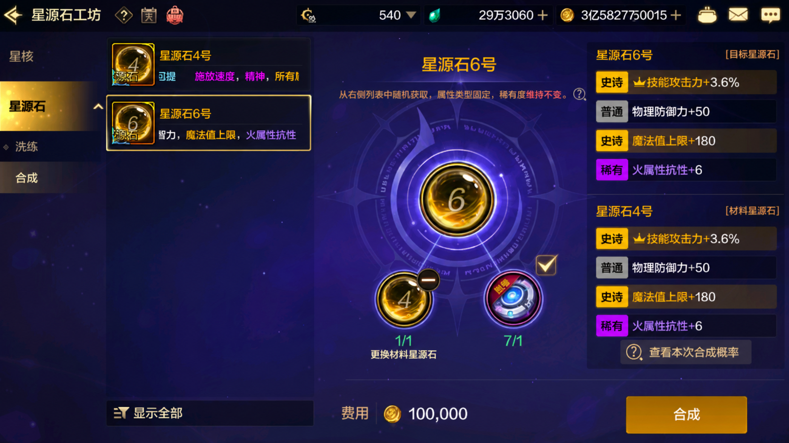

先用“合成分布 / 洗练”判断单次概率，再用“玉玺合成预算 / 玉玺成功率”评估史诗石材料准备；稀有和神器的全史诗技攻合成，请进入模块 07 分别计算。
合成目标词条分布
按星源石品阶组合进入对应页面；同品阶公式已启用，跨品阶页面暂作预留。
第一次用？先看懂这两个输入
这台计算器不是让你填写星源石的全部属性，而是只统计你真正关心的那一种词条。
就是你这次想统计的同类属性。例如想计算合成后能留下几条“史诗·技能攻击力 +3.6%”，那么它就是目标词条。分别数出材料 A、材料 B 各有几条，并填入对应输入框。
就是你能接受的最低结果。填 1 表示结果有 1 条或更多都算成功；填 2 表示必须有 2 条或更多才算成功。

史诗与史诗合成
沿用原模块公式：两颗各 4 条词条，8 条候选中不放回抽取 4 条。
神器与神器合成
两颗各 3 条词条，6 条候选中不放回抽取 3 条。
稀有与稀有合成
两颗各 2 条词条，4 条候选中不放回抽取 2 条。
史诗与神器合成
子模块页面已建立。跨品阶机制与算法等待后续讨论确认后补充，当前不进行任何概率假设。
史诗与稀有合成
子模块页面已建立。跨品阶机制与算法等待后续讨论确认后补充，当前不进行任何概率假设。
神器与稀有合成
子模块页面已建立。跨品阶机制与算法等待后续讨论确认后补充，当前不进行任何概率假设。
洗练珍品与指定词条概率
支持皇冠数量、洗练轮数和单条史诗率自定义。
锤炼结果分布
比较普通锤炼与刀刃类强化道具；锤炼后不可继续洗练、合成或交易。
玉玺合成：从当前库存→四史诗技攻星源石
同级配对、全程使用合成固能环、回收1/2/3史诗技攻星源石，计算合成第一颗4史诗技攻星源石的精确期望。
请自行结合泰拉比例 / 礼包价格 / 充值折扣 / 合成固能环泰拉价格，估算每个合成固能环的平均单价。
玉玺合成：有限材料最终成功率
期望值不是保底。输入实际准备的库存，计算材料耗尽前至少合成1颗4史诗技攻星源石的精确概率。
1 / 2 / 3 / 4史诗技攻星源石扫货估值
按长期合成材料价值判断拍卖行报价是否值得买入。
请自行结合泰拉比例 / 礼包价格 / 充值折扣 / 合成固能环泰拉价格，估算每个合成固能环的平均单价。
稀有&神器全史诗技攻合成
分别计算稀有 2 词条与神器 3 词条的期望投入，以及有限材料下最终合成成功率。
稀有全史诗技攻合成
每颗 2 条词条；同级配对时从 4 条候选中抽取 2 条。
同级配对、全程使用合成固能环、回收1史诗技攻结果；这是长期数学期望，不代表准备 8 颗就一定成功。
神器全史诗技攻合成
每颗 3 条词条；同级配对时从 6 条候选中抽取 3 条。
同级配对、全程使用合成固能环、回收1/2史诗技攻结果；这是长期数学期望，不代表准备 48 颗就一定成功。